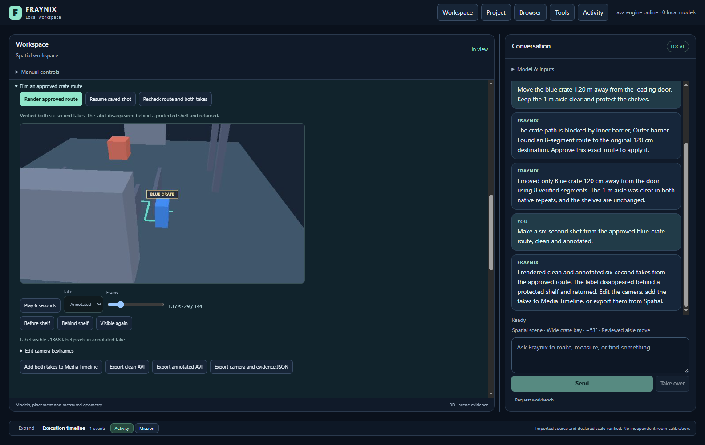
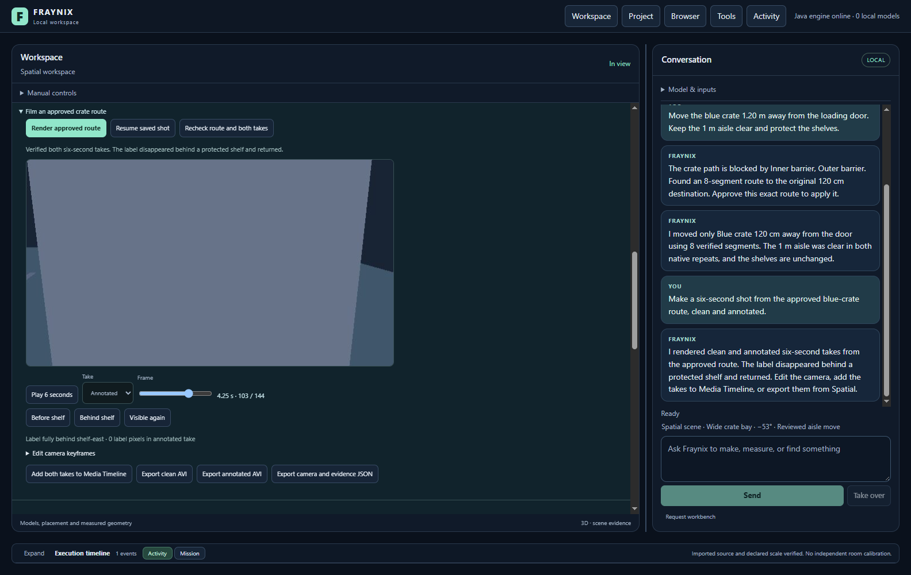
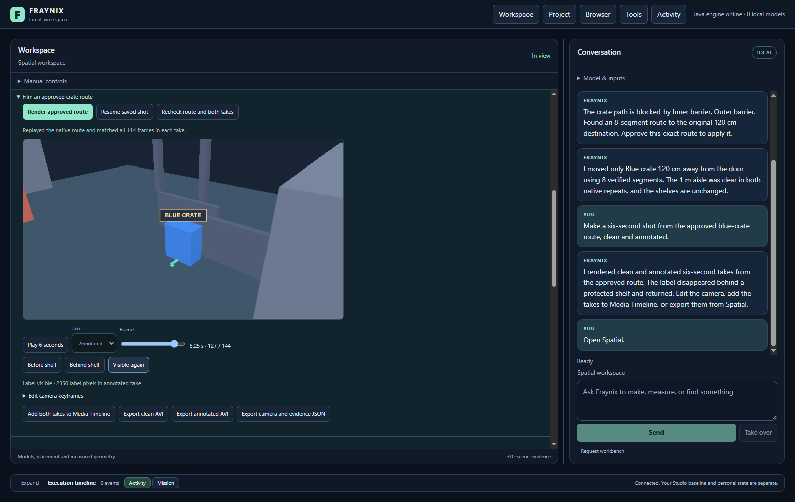
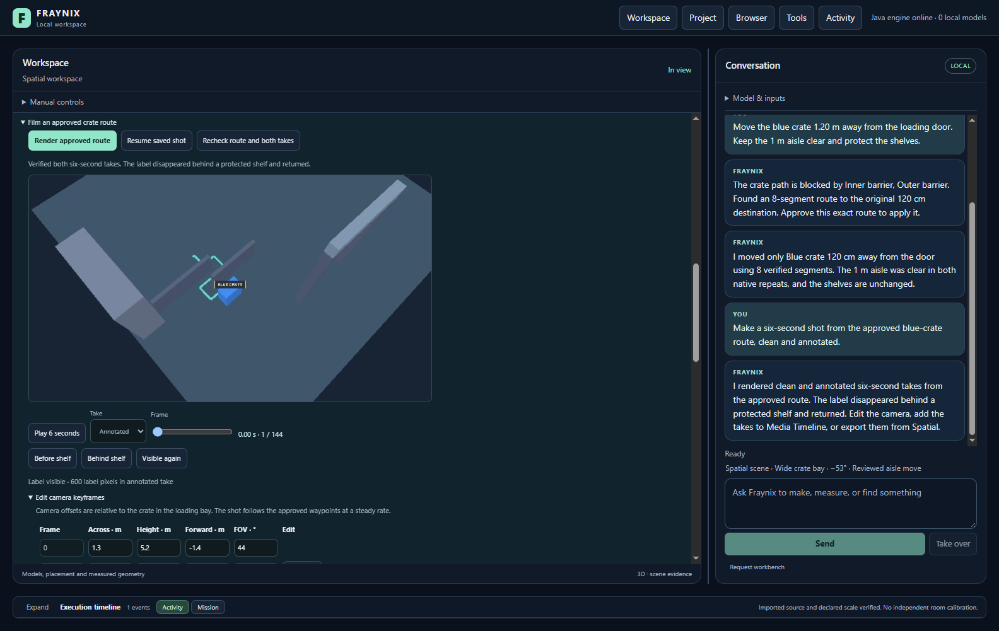

Film an approved 3D crate route
Approve a route in Spatial, then film two takes using one camera. The crate's label disappears behind a protected shelf and reappears.

The anchored label is visible at frame 28

The shelf hides both graphics at frame 102

The label returns in the replayed shot at frame 126

An editable camera revision with a changed opening field of view
System files
Open source